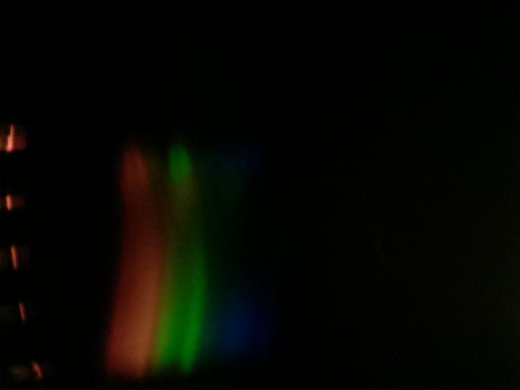
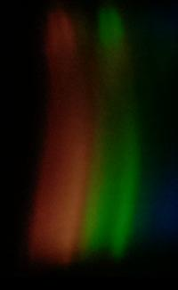
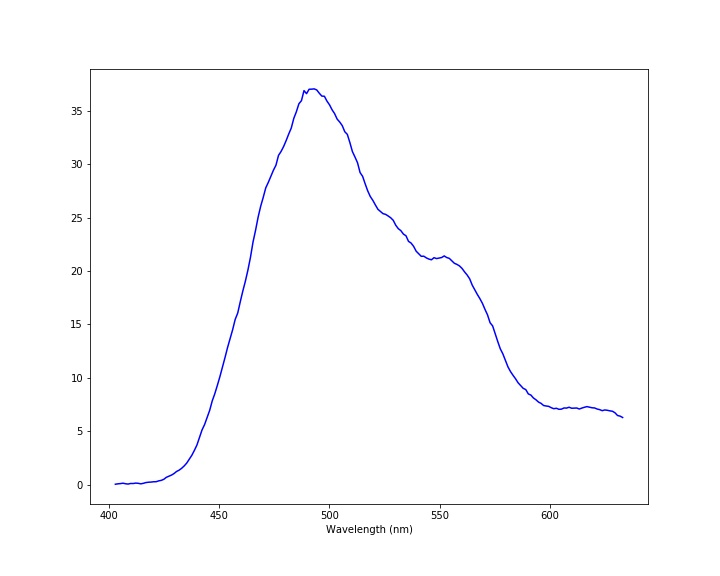

Experiment No. 5: Warm Light vs. Cool LightMeasurement taken on 20211210-022254Scientist: ArabellaLight source: CFL Bulb Transmission sample: None Exposure: 10000000 µsec Before Experiment NotesSunlite, 900 lumens, 5000 K. Super white. In this experiment, I will compare this light vs. a warm light. |
ImagesRaw imageProcessed imageSpectrum |
DataDownload data - spectrum-20211210-022254.csv |